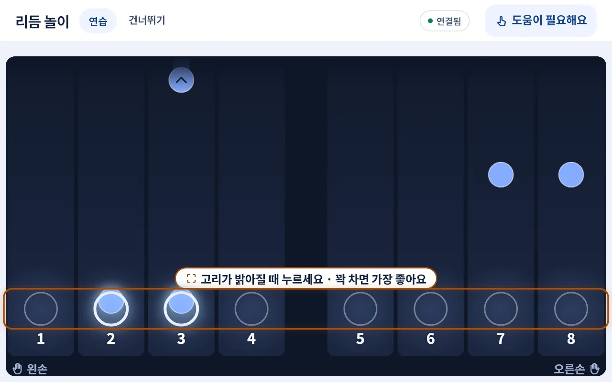
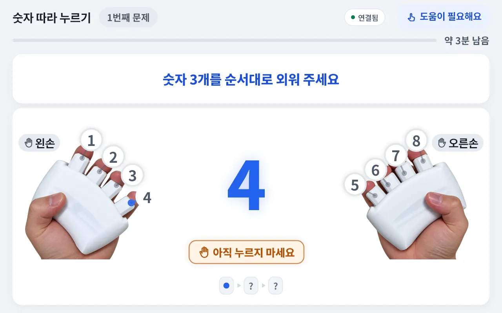

기술
손가락 입력을 읽는 일곱 가지 기준
같은 그립을 눌러도 활동마다 다른 값이 남습니다. 손 운동의 눌림 깊이부터 리듬 놀이의 박자까지, 앱이 읽고 계산하는 과정을 살펴보세요.
출시 예정
입력에서 기록까지, 하나의 플랫폼
활동을 골라 입력과 기록이 어떻게 달라지는지 살펴보세요.
그립 입력

양손의 레버 8개가 손가락별 눌림 깊이를 읽습니다.
훈련 화면

켜진 번호를 누르고 목표 시간까지 쥡니다.

음표가 고리에 닿을 때 같은 번호를 누릅니다.

화면에 뜬 숫자를 기억해 같은 순서로 누릅니다.
수행 기록
48회 평균 · 예시 데이터
48회 평균 · 예시 데이터
12라운드 평균 · 예시 데이터
레버 하나가 눌림을 읽는 과정
센서 거리와 앱 판정
0.1초 간격으로 읽은 예시 거리 신호를 실제 앱이 어떻게 판정하는지 장면별로 보세요.
기본 설정에서는 깊이 65%부터 완전 눌림으로 판정합니다.
MP4 영상 열기기술 자료
영역별 기록 7가지
훈련 기록을 일곱 영역으로 나누어 봅니다. 영역 이름은 기록을 나눈 이름이며, 사람의 능력을 재는 항목이 아닙니다. 어르신 화면에는 콘텐츠 이름만 나옵니다. 관리자 화면에서는 콘텐츠별로 기록을 모읍니다. 반응부터 순서까지 여섯 지표는 각각의 최소 표본 기준(8개)을 충족하면 표시합니다. 표의 콘텐츠는 영상에서 사용한 예시입니다.
| 영역 | 앱이 기록하는 값 | 계산 방법 | 영상 속 콘텐츠 |
|---|---|---|---|
| 반응 | 목표 입력까지 걸린 시간 | 콘텐츠별 반응 시간의 중앙값 | 손 운동 |
| 분리 | 목표 외 손가락이 함께 눌린 시행 | 함께 눌린 시행 수 / 관찰한 시행 수 | 손 운동 |
| 조절 | 손가락별 보정 범위 안에서 누른 깊이 | 유효한 시행별 최고 깊이의 평균 (%) | 손 운동 |
| 지속 | 목표 시간과 실제로 누르고 있던 시간 | 시행마다 목표 대비 유지율을 최대 100%로 제한한 뒤 평균 | 손 운동 |
| 박자 | 박자 판정과 목표 박자에서 벗어난 시간 | 성공 1 · 부분 성공 0.5 · 실패 0의 평균 (%), 시간 초과 제외 | 리듬 놀이 |
| 순서 | 제시된 순서에서 맞힌 자리 수 | 라운드별 맞힌 자리 수의 평균 | 숫자 따라 누르기 |
| 협응 | 왼손과 오른손 각각의 시도와 성공 | 각 손의 성공 횟수 / 시도 횟수 | 손 운동 |
콘텐츠마다 보는 영역이 다릅니다
각 콘텐츠가 주로 보는 영역과 함께 기록하는 영역을 확인하세요.
좌우로 밀어 다른 콘텐츠를 확인하세요.
| 영역 | 손 운동 | 리듬 놀이 | 숫자 따라 누르기 | 두더지 잡기 | 주먹으로 피하기 | 손가락 따로 | 물 따르기 | 박자 따라 하기 |
|---|---|---|---|---|---|---|---|---|
| 반응 | 함께 봅니다 | 해당 없음 | 함께 봅니다 | 주로 봅니다 | 해당 없음 | 해당 없음 | 해당 없음 | 해당 없음 |
| 분리 | 주로 봅니다 | 해당 없음 | 함께 봅니다 | 함께 봅니다 | 해당 없음 | 주로 봅니다 | 해당 없음 | 해당 없음 |
| 조절 | 해당 없음 | 해당 없음 | 해당 없음 | 해당 없음 | 해당 없음 | 함께 봅니다 | 주로 봅니다 | 해당 없음 |
| 지속 | 주로 봅니다 | 함께 봅니다 | 해당 없음 | 해당 없음 | 함께 봅니다 | 해당 없음 | 함께 봅니다 | 해당 없음 |
| 박자 | 해당 없음 | 주로 봅니다 | 해당 없음 | 해당 없음 | 해당 없음 | 해당 없음 | 해당 없음 | 주로 봅니다 |
| 순서 | 해당 없음 | 해당 없음 | 주로 봅니다 | 해당 없음 | 해당 없음 | 해당 없음 | 해당 없음 | 해당 없음 |
| 협응 | 함께 봅니다 | 함께 봅니다 | 해당 없음 | 해당 없음 | 주로 봅니다 | 해당 없음 | 해당 없음 | 해당 없음 |
주로 보는 영역 함께 보는 영역
두더지 잡기의 반응 시간은 다른 콘텐츠의 반응 값과 합산하지 않습니다.
기기와 앱 구성
손가락의 움직임이 기록으로 남기까지 거치는 네 단계입니다.
-
햅틱 그립
왼손 · 오른손 한 쌍. 손가락별 독립 레버로 입력을 받고, 불빛으로 신호를 주며, 눌림을 진동으로 확인해 줍니다.
레버 8개 · 약 0.1초 신호 -
블루투스
태블릿 앱
안드로이드 태블릿에서 훈련을 안내하고, 한 문제(시행)마다 기록합니다. 인터넷이 끊겨도 모아 두었다가 다시 연결되면 보냅니다.
소리 · 큰 글씨 · 연습 후 시작 -
인터넷
기록 서버
식별 번호로 시행을 저장하고, 회차 · 주 단위로 집계하며, 난이도 제안을 계산합니다.
이름 대신 식별 번호 -
웹 브라우저
관리자 웹
센터 현황, 대상자별 기록, PDF 리포트와 CSV, 난이도 제안의 적용과 계정 관리를 합니다.
제안은 담당자가 적용
콘텐츠와 난이도
콘텐츠마다 난이도 사다리가 있고, 난이도는 모양(단계 · 칸)과 속도로 정해집니다.
| 콘텐츠 | 어떻게 하나요 | 주로 보는 영역 | 난이도 칸 |
|---|---|---|---|
| 손 운동 | 켜진 번호의 손가락을 눌러 정해진 시간 동안 쥐고 있기. 한 손씩 · 양손 · 한 손에 둘 · 손마다 다르게 · 양손 둘씩, 다섯 가지 짜임을 한 바퀴 돕니다 | 분리 · 지속 (반응 · 협응) | 13칸 |
| 리듬 놀이 | 배경음에 맞춰 내려오는 동그라미를 그 손가락으로 제때 누르기. 곡 한 번이 한 판입니다 | 박자 (지속 · 협응) | 19칸 |
| 숫자 따라 누르기 | 숫자를 하나씩 보고 기억해 같은 순서로 누르기. 5라운드가 한 블록입니다 | 순서 (반응 · 분리) | 8칸 |
| 두더지 잡기 | 켜진 손가락을 눌러 올라온 두더지를 잡는 반응 놀이. 설명 → 연습 → 본 판 순서로 진행합니다 | 반응 (분리) | 7칸 |
| 주먹으로 피하기 | 왼손 전체를 쥐면 왼쪽으로, 오른손 전체를 쥐면 오른쪽으로 한 칸씩 가며 내려오는 먹구름을 피합니다. 쥐었다 폈다가 다시 쥐어야 또 움직이며, 두 손이 함께 있어야 하는 활동입니다 | 협응 (지속) | 10칸 |
| 손가락 따로 | 불이 켜진 손가락 하나만 살짝 누르고 꽃이 필 때까지 그대로 있기. 다른 손가락은 쉬게 둡니다 | 분리 (조절) | 12칸 |
| 물 따르기 | 레버를 누르는 깊이만큼 물이 따라집니다. 물 높이를 노란 띠에 맞추고 꽃이 필 때까지 그대로 있기. 손을 떼면 내려갑니다 | 조절 (지속) | 12칸 |
| 박자 따라 하기 | 들려주는 박자를 끝까지 들은 뒤, 내 차례에 같은 박자로 누르기 | 박자 | 10칸 |
난이도 칸은 난이도 사다리의 단계 수입니다. 계절 · 지역 테마 팩 같은 계획 중인 콘텐츠는 이 표에 넣지 않았습니다.
기록이 남는 과정
그립의 신호가 손가락별 기록과 난이도 제안으로 이어지는 순서입니다.
그립 신호
레버 위치를 손가락별로 약 0.1초마다 보냅니다.
보정
담당자가 보정한 「편 상태 ~ 끝까지 누름」 길이를 기준으로 눌린 깊이(%)로 바꿔 읽습니다.
시행 기록
한 문제마다 손가락별 반응 시간 · 결과 · 눌린 깊이 · 따라 눌린 손가락을 자동 저장합니다.
집계
회차 · 주 단위로 모아 관리자 웹, PDF 리포트, CSV로 보여 줍니다.
제안
기록을 바탕으로 난이도를 권하고, 적용은 담당자가 확인합니다.
시행 한 건에 남는 값 예시 값
손 운동 · 왼손 2번
- 결과
- 성공
- 반응 시간
- 620 ms
- 눌린 깊이
- 78 %
- 따라 눌린 손가락
- 없음
세로 눈금은 눌림 인정 깊이(기본 65%, 50 · 65 · 80% 중 담당자가 선택)입니다. 위 값은 설명을 위한 가상의 예입니다.
한 문제의 결과 정확도 계산
손댄 문제 기준
- 성공
- 1로 셈
- 부분 성공
- 0.5로 셈
- 실패
- 0으로 셈
- 시간 초과
- 분모에서 빼고 따로 셈
손댄 문제가 없으면 정확도는 0이 아니라 「값 없음」입니다.
기록 값 계산식
코드가 계산하는 식을 그대로 옮긴 정의입니다.
- 정확도
- (성공 1 · 부분 성공 0.5 · 실패 0)의 합 ÷ 손댄 문제 × 100. 시간 초과는 분모에서 빼고 따로 셉니다.
- 걸린 시간
- 시간 초과와 리듬 놀이를 뺀 시행의 반응 시간(ms)의 중앙값. 리듬 놀이는 박자 지표로 따로 잽니다.
- 손마다 해낸 비율
- 손마다 해낸 횟수 ÷ 한 횟수 × 100. 왼손 · 오른손을 따로 보이며, 두 값을 한 숫자로 합치지 않습니다.
- 버틴 시간
- 손 운동에서 실제로 쥔 시간(목표 시간까지만 인정)의 합 ÷ 목표 시간의 합 × 100.
- 박에 맞춘 비율
- (정확 + 좋음 × 0.5) ÷ 리듬 시행 × 100. 놓친 노트는 실패로 기록합니다.
- 눌린 깊이
- 한 시행 동안 목표 손가락 레버가 가장 깊이 들어간 때가 보정 길이의 몇 %인가(0~100). 힘이 아니라 레버가 들어간 거리이며, 같은 사용자의 다른 때와만 견줍니다.
- 따라 눌린 손가락
- 눌러야 할 손가락 대신(또는 함께) 다른 손가락이 눌린 횟수와 그 손가락들. 완전히 눌린 것만 세고, 새로 눌린 한 번만 셉니다.
눌린 깊이와 따라 눌린 손가락은 기록값이며 정확도 · 난이도 제안 식에는 들어가지 않습니다. 정의는 개발 중인 초안이며 바뀔 수 있습니다.
난이도 제안 기준
정확도만 보지 않고, 누르지 못해 생긴 시간 초과까지 함께 봅니다.
시작 난이도
처음에는 콘텐츠마다 가장 쉬운 칸에서 시작하고, 담당자가 콘텐츠별로 난이도와 빠르기를 정합니다.
세는 시행
지금 난이도에서 최근 28일 동안, 난이도를 바꾼 뒤에 한 시행만 셉니다.
시간 초과를 함께 봅니다
시간 초과 몫이 20% 이상이면 정확도가 높아도 올리지 않고 「이어갑니다」와 까닭을 보여 줍니다. 50% 이상이면 「자리와 기기를 한번 확인해 보세요」를 덧붙입니다. 안 눌러서 생긴 시간 초과가 「어려움」으로 읽혀 난이도가 내려가는 일을 막기 위해서입니다.
바로 되돌리지 않습니다
난이도를 바꾼 뒤 두 번의 회차가 지나기 전에는 다시 권하지 않습니다.
앱이 몰래 바꾸지 않습니다
제안은 관리자 웹에서 [적용] · [나중에] · [무시]로 담당자가 정합니다. 적용 · 무시 · 바꿈과 그 근거는 이력에 남습니다.
기준값은 임시 값이며, 실제 사용 기록을 본 뒤 정합니다.
손가락별 기록
관리자 웹의 기록 요약은 점수나 순위를 매기지 않습니다. 주별 출석 기록과 콘텐츠별 난이도 자리, 손가락별 기록을 보여 줍니다.
- 기록손가락별 수행 기록과 리포트
- 제안수행 기록을 바탕으로 난이도 · 속도 제안
- 계획기록을 바탕으로 한 훈련 구성 제안 (계획 · 적용은 담당자)

화면은 개발 환경의 예시 화면이며, 식별번호와 가상 데이터만 쓰였습니다. 제품 사양과 화면은 바뀔 수 있습니다.
향후 훈련 구성 제안
쌓인 훈련 기록을 바탕으로, AI를 활용해 훈련 구성을 제안하는 기능을 검토하고 있습니다. 아직 제품에 들어 있지 않고 시점은 정해지지 않았습니다.
기록
콘텐츠별 난이도와 회차 기록이 쌓입니다.
제안
그 기록으로 다음 훈련 구성을 제안합니다.
담당자 확인
적용할지는 담당자가 정합니다. 앱이 저절로 바꾸지 않습니다.
이 계획은 관련 법규 확인이 먼저입니다. 훈련 구성에 관한 제안일 뿐 사람의 상태를 판단하지 않으며, 진단이나 치료에 관한 판단이 아닙니다.
특허 출원
손가락별 독립 입력과 햅틱 구조, 훈련 구성에 대해 국내 특허 3건을 출원했습니다(출원 중, 등록 전).
| 출원번호 | 출원일 | 증명서 |
|---|---|---|
| 10-2025-0169761 | 2025.11.11 | 출원사실증명원 보기 |
| 10-2026-0112080 | 2026.06.19 | 출원사실증명원 보기 |
| 10-2026-0112861 | 2026.06.20 | 출원사실증명원 보기 |
증명원의 개인정보는 가렸습니다. 도면과 청구항은 공개 전이라 싣지 않았습니다.
수행 기록 안내이 값은 훈련을 어떻게 했는지에 대한 기록입니다. 진단이 아니며, 의학적 판단은 담당 의료인의 몫입니다.